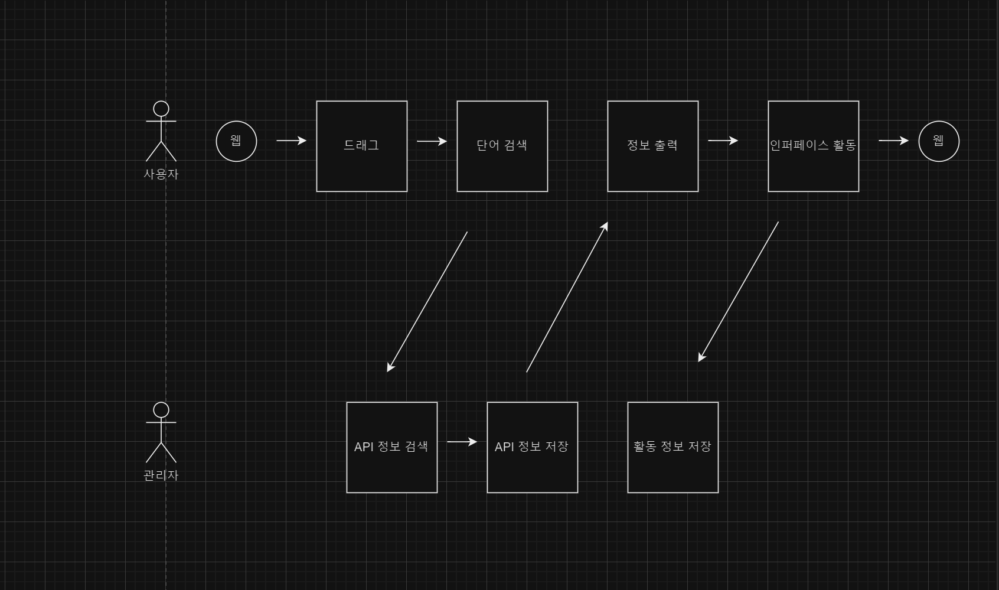
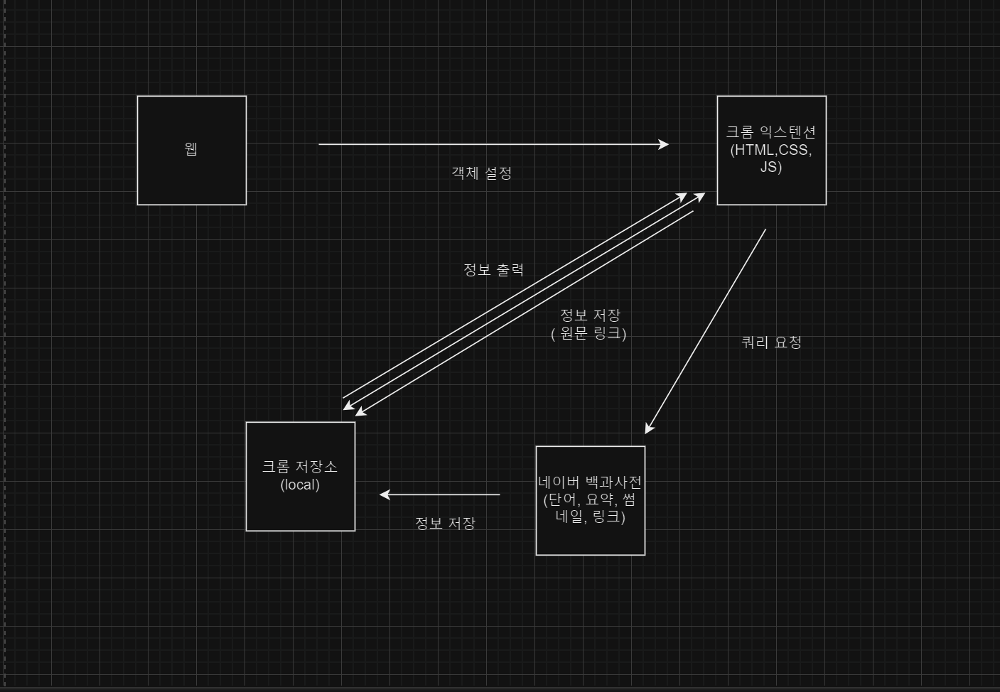
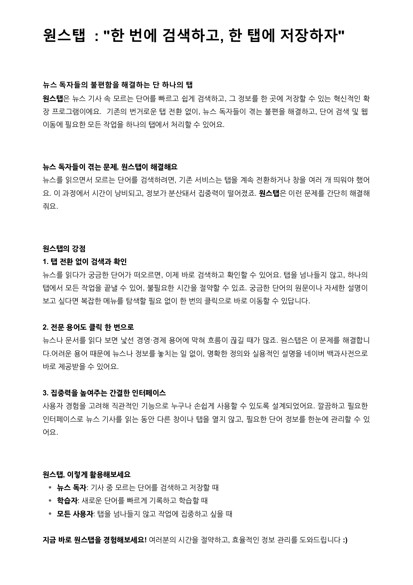
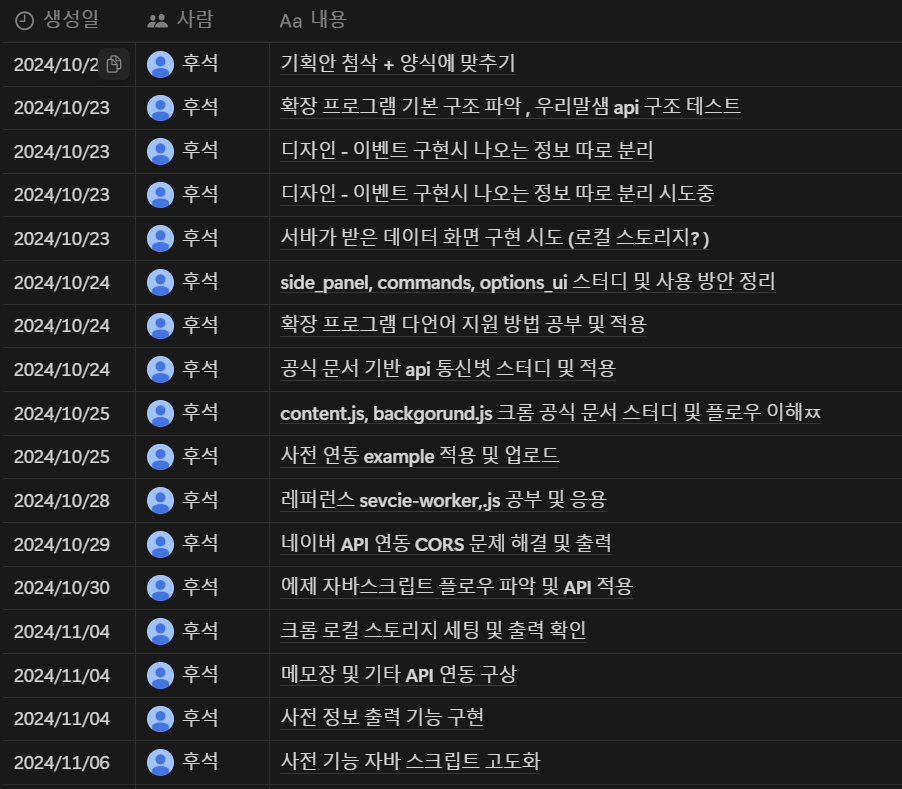
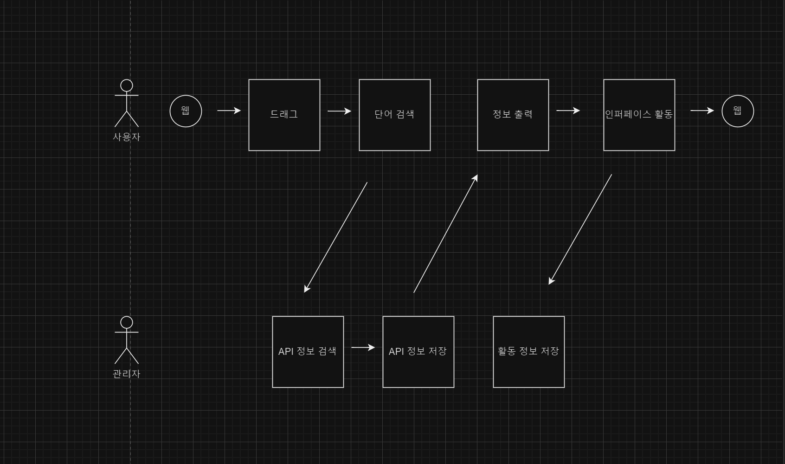
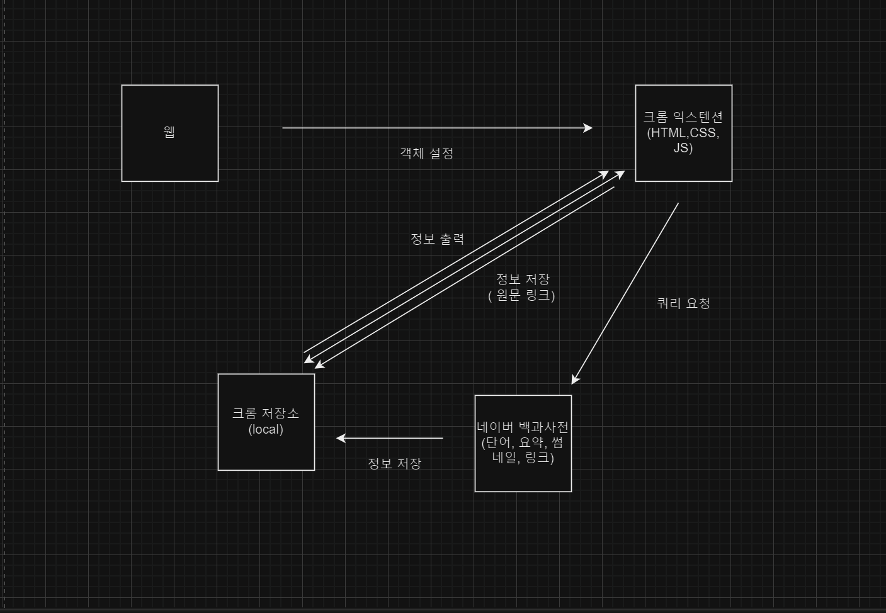
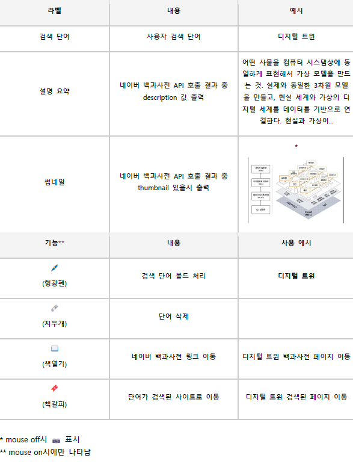
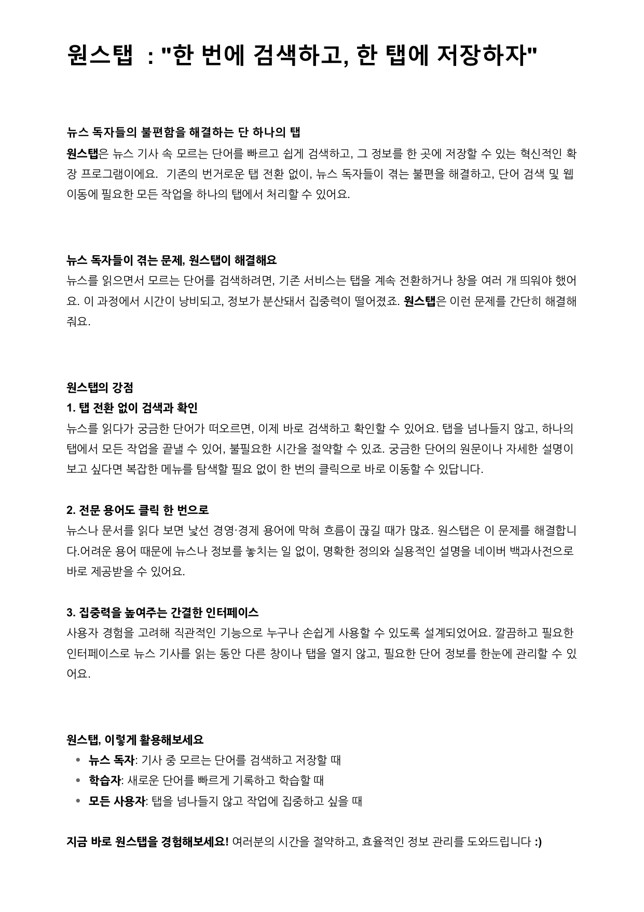
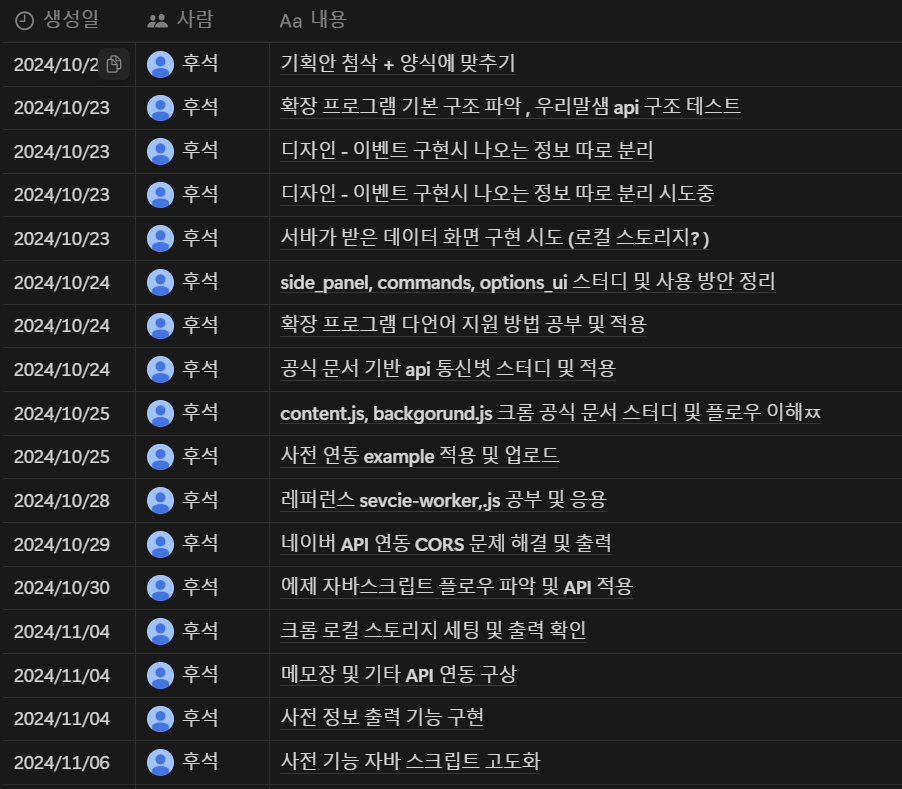

확장 프로그램 개발
배경 및 목표
- 기사의 어려운 용어로 독자가 독해에 어려움을 겪음
- 웹 기사는 지면 한계로 각주 제공이 불가능한 상황
- 독자가 간편 검색으로 뜻을 즉시 확인 가능한 프로그램 개발
개발
- 핵심 : 긁고 - 검색 기능
- 부가 : 수정 및 링크 한 탭이동 기능
- 도식화: 유저 및 데이터 플로우
결과
- 프로토타입 개발
- 홍보자료 작성
- 설문조사 자료 수집🔗
측정
- 프토토타입 : 총 단어 검색 수 (날짜별, 요일별)
- 정식 출시 : 프로덕트 리뷰 및 평점, 다운로드 수
- 개발 필요 : 액티브, 리텐션 유저 수
업무
- 기간: 2024.10.07 ~ 2024.11.25 (8주)
- 인원: 동아일보 미디어 프론티어 과정 1인
- 일정: Notion
- 기여: 파이널 개인 프로젝트
개발
도식화 - 유저 플로우
 도식화 - 데이터 플로우
 결과
프로토타입 개발 - 인터페이스
 측정
프로토타입 - 총 단어 검색 수, 네이버 API 통계
업무
일정 - 개인 Notion

- 핵심 :
- API 연동 및 정보 출력
- 우리말샘 API → 네이버 API
- 인터페이스 공간 설정
- IFRAME → SIDEPANEL
- 매니페스토 설정
- CORS 문제 해결을 위한 퍼미션 설정
- 크롬 로컬 스토리지 활용
- 크롬 싱크 스토리지 염두
- 부가 :
- 강조
- strong 태그
- 삭제
- 크롬 로컬 스토리지값 삭제
- 원문 이동
- 네이버 API에서 URL 파싱 및 저장
- 북마크 이동
- 검색 이벤트 발생 시 현 페이지 URL 저장
 도식화 - 데이터 플로우
{kind=link}
 결과
{kind=link}
프로토타입 개발 - 인터페이스
 프로토타입 개발 - 라벨 및 기능 설명
프로토타입 개발 - 라벨 및 기능 설명

{kind=link}
- 인적 사항 : 이름, 연락처, 성별, 연령대
- 단어 검색 서비스 필요도 : 단어 검색 습관 유무, 빈도, 페인 포인트
- 원스탭 필요도 : 직관적 이해도 측정 및 느낌 설명, 예상 만족도( 사용성, 직관성, 예측성, 심미성, 실용성)
- 원스탭 공감성 : 지인 추천 의사 유무 및 이유
 측정
{kind=link}
프로토타입 - 총 단어 검색 수, 네이버 API 통계
업무
{kind=link}
일정 - 개인 Notion

{kind=link}